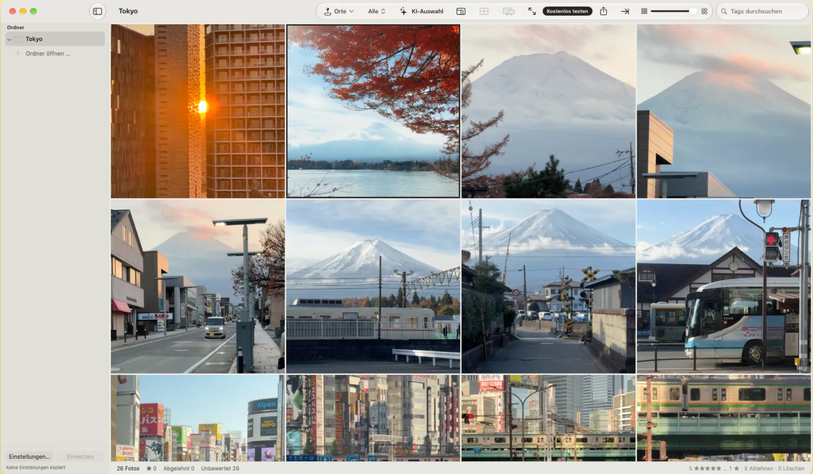

ORDNERBASIERT
Butter Edit arbeitet mit den Ordnern, die du schon hast. Nichts wird kopiert, nichts importiert – Ordner öffnen und loslegen.

Ordner direkt öffnen
SD-Karten, externe SSDs, jeder Ordner auf deinem Computer. Auf dem Mac erscheinen Änderungen im Finder sofort.
Bearbeitungen in XMP neben jedem Foto
Bewertungen, Ablehnungen, Farbmarkierungen und Stichwörter landen in Standard-XMP-Feldern, die auch andere Foto-Apps lesen. Deine Originale bleiben unberührt.
Laufwerke kommen und gehen
Ziehst du ein Laufwerk ab, bleiben seine Ordner als „nicht verbunden“ in der Seitenleiste. Steck es wieder ein und mach weiter – ohne Neustart.
Miniaturen reisen mit dem Laufwerk
Der Miniaturen-Cache liegt in einem versteckten Ordner auf demselben Laufwerk wie die Fotos – beim zweiten Mal geht es sofort, auch an einem anderen Computer. Größe und Ort wählst du in den Einstellungen.
Vorschauen im Voraus
Vorschauen in Bildschirmgröße für den ganzen Ordner entstehen im Hintergrund – beginnend beim aktuellen Foto und pausiert, während du arbeitest.
Schnell aussortieren
1–5 Sterne, X zum Ablehnen, Farbmarkierungen mit 6–9, 2–6 Fotos nebeneinander vergleichen, Stapel und Filter nach Bewertung, Markierung, KI-Auswahl oder Tags.
RAW-Editor ohne Import
Kostenlos laden und 30 Tage lang alle Funktionen gratis testen. Erfordert macOS 26 oder neuer. Windows 10 (64 Bit) oder neuer.